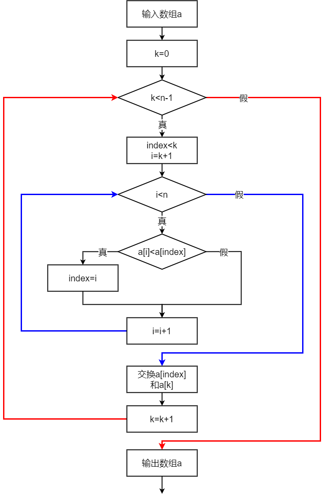
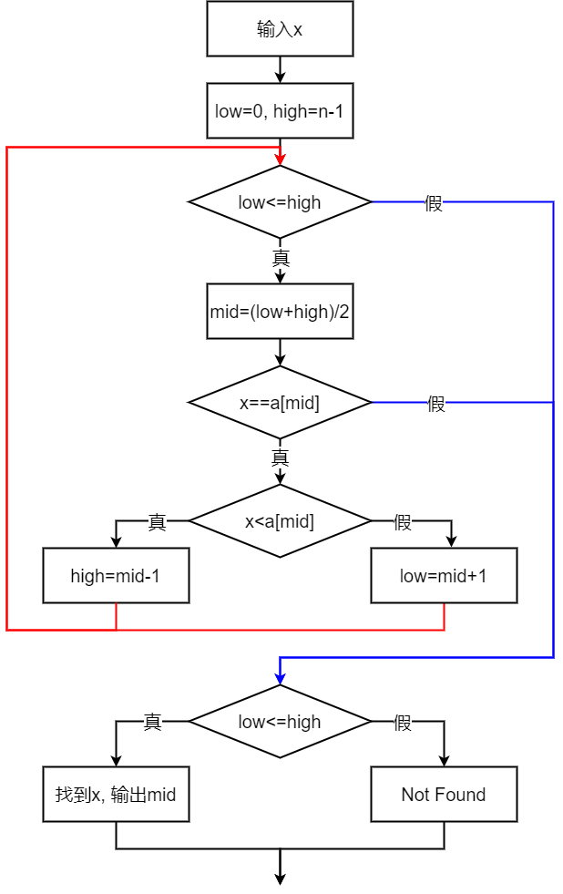

程序设计基础
第七章 数组
第7章 数组
本章要点
- 什么是数组?为什么要使用数组?如何定义数组?
- 如何引用数组元素?
- 二维数组的元素在内存中按什么方式存放?
- 什么是字符串?字符串结束符的作用是什么?
- 如何实现字符串的存储和操作，包括字符串的输入输出?
- 怎样理解C语言将字符串作为一个特殊的一维字符数组?
7.1 输出所有大于平均值的数
例7-1. 输出所有大于平均值的数
输入n个整数(1≤n≤10)，计算这些数的平均值，输出所有大于平均值的数
7.1.1 程序解析
#include<stdio.h>
int main()
{
int i, n;
double average, sum;
int a[10]; /* 定义一个数组a，最多有10个元素 */
printf("Enter n:");
scanf("%d", &n);
sum=0;
if(n>=1 && n<=10){
printf("Enter %d integers:", n);
for(i=0; i<n; i++){ /* 输入n个元素，并求所有元素的和 */
scanf("%d", &a[i]);
sum+=a[i];
}
average=sum/n;
printf("Average=%.2f\n", average); /* 求平均值 */
for(i=0; i<n; i++){
if(a[i]>average)
printf("%d ", a[i]); /* 与平均值比较，输出大于平均值的数 */
}
printf("\n");
}else{
printf("Invalid value\n");
}
return 0;
}
数组
使用数组，使程序简洁、可读性高，易于使用循环结构。
7.1.2 一维数组的定义和引用
类型名，用于指明数组元素的类型
数组名，标识符，用于标识数组(变量)的名称
数组长度，
int a[10]; /* 定义一个含有10个整型元素的数组a */
char c[200]; /* 定义一个含有200个字符元素的数组c */
float f[5]; /* 定义一个含有5个浮点型元素的数组f */
数组的内存结构
数组名是一个
假定系统规定int类型占用2个字节，则若定义int a[10];，其在内存中的分配方式如图中所示
即只要知道了数组首元素的地址，以及每个元素存储所需的字节数，其余各个元素的存储地址均可计算得到
数组元素的引用
数组使用遵循先
数组元素引用的语法:
下标：整型表达式；下标取值范围：0~数组长度-1
如int a[10];
对10个元素的引用分别为: a[0], a[1], a[2], ..., a[9]
注意数组下标不能越界，不能使用a[10]
数组元素的使用方法与同类型的变量使用方法相同
注意区分数组的定义和数组元素的引用
int a[10];
int i, sum=0;
for(i=0; i<10; i++){
scanf("%d", &a[i]);
sum+=a[i];
printf("%d", a[i]);
}
7.1.3 一维数组的初始化
- 定义数组时，对数组元素赋初值
类型名 数组名[数组长度]={初值表};
int a[10]={1, 2, 3, 4, 5, 6, 7, 8, 9, 10};
一维数组的初始化
- 静态数组、动态数组的初始化
/* 静态数组若没有初始化初值，所有元素自动赋0 */
static int b[6]={1,2,3,4,5,6};
static int b[6];
static in s[6]={1,2,3} /* s[3]~s[5]均为0 */
/* 动态存储数组若没有初始化初值，所有元素自动赋随机值 */
int c[6]; /* 等价于 auto int c[6]; */
int d[5]={0, 1}; /* d[0]=0, d[1]=1, 其余元素为随机值 */
/* 如果是对所有元素赋初值，可省略数组长度，但建议不要省略 */
int a[]={0, 1, 2, 3, 4, 5}; /* 等价于int a[6]={...} */
7.1.4 使用一维数组编程
for(int i=0; i<n; i++)
printf("%d ", a[i]);
将数组下标作为循环变量，通过循环，逐个处理数组元素，核心是
一维数组示例
- 例7-2. 用数组计算Fibonacci数列的前n个数，并按每行打印5个的顺序输出
- 例7-3. 顺序查找法。输入正整数n和整数x，再输入n个整数并存入数组a中，在数组中查找x，若找到，输出相应的最小下标，否则，输出"Not found"
- 例7-4. 输入n, 再输入n个整数，(1)输出最小值和它对应的下标；(2)将最小值与第一个数交换，输出交换后的n个数
- 例7-5. 选择法排序。输入n，再输入n个整数，用选择法将它们从小到大排序后输出
- 例7-6. 调查电视节目受欢迎程序。某电视台要进行一次对该台8个栏目的受欢迎情况，共调查了n位观众，现要求编写程序，输入观众的投票，统计输出各栏目的得票情况
- 例7-7. 二分查找法。设已有一个n个元素的整形数组a，且按值从小到大有序排列。输入一个整数x，然后在数组中查找x，如果找到，输出相应的下标，否则，输出"Not Found"
计算Fibonacci数列
例7-2. 计算Fibonacci数列
用数组计算Fibonacci数列的前n(1≤n≤46)个数，即1,1,2,3,...，并按每行打印5个的顺序输出，如果最后一行的输出少于5个数，也需要换行
Fibonacci数列源程序
#include<stdio.h>
#define MAXN 46 /* 定义符号常量MAXN */
int main()
{
int i, n;
int fib[MAXN]={1,1}; /* 数组初始化，生成斐波那契数列的前两项 */
printf("Enter n:");
scanf("%d", &n);
if(n>=1 && n<=46){
/* 计算斐波那契数列的其余n-2项 */
for(i=2; i<n; i++)
fib[i]=fib[i-1]+fib[i-2];
/* 输出斐波那契数列 */
for(i=0; i<n; i++){
printf("%6d", fib[i]);
if(i%5==4) /* 每5个换行 */
printf("\n");
}
if(n%5!=0) /* 如果总数不是5的倍数，最后换行 */
printf("\n");
}else{
printf("Invalid value!\n"); /* 输出错误信息 */
}
return 0;
}
查找满足条件的所有整数
例7-3. 查找满足条件的所有整数
输入正整数n(1≤n≤10)和整数x，再输入n个整数并存入数组a中，然后在数组a中查找给定的x。如果数组a中的元素与x的值相同，输出所有满足条件的元素的下标(下标从0开始)；如果没有找到，输出"Not Found"
查找满足条件的所有整数源程序
#include<stdio.h>
#define MAXN 10
int main()
{
int i, flag, n, x;
int a[MAXN];
printf("Enter n:");
scanf("%d%d", &n, &x);
printf("Enter %d integers", n);
for(i=0; i<n; i++)
scanf("%d", &a[i]);
flag=0; /* 在数组a中查找，先假设x不在数组a中，设置flag为0 */
for(i=0; i<n; i++){
if(a[i]==x){ /* 如果在数组a中找到了x，输出数组下标i，设置flag为1 */
printf("Index is %d\n", i);
flag=1;
}
}
if(flag==0) /* 如果flag为0，表明x不在数组a中 */
printf("Not Found!\n");
return 0;
}
题目若改为：(1)如果存在，输出yes,否则输出no? (2)如果找到，输出最小的下标? (3)如果找到，输出最大的下标? (4)如果存在，输出找到的次数?
求最小值和最小下标
例7-4. 求最小值和最小下标
输入一个正整数(1≤n≤10)，再输入n个正整数，将它们存入数组a
(1). 求最小值及其下标，输出最小值和它对应的最小下标
(2). 交换最小值，将最小值和第一个数交换，输出交换后的n个数
求最小值和最小下标
求最小值和最小下标
#include<stdio.h>
#define MAXN 10
int main()
{
int i, index, n;
int a[MAXN];
printf("Enter n:"); /* 输入n和n个数组元素 */
scanf("%d", &n);
printf("Enter %d integers:", n);
for(i=0; i<n; i++)
scanf("%d", &a[i]);
index=0; /* 找最小值，下标保存在index中 */
for(i=1; i<n; i++){
if(a[i]<a[index])
index=i;
}
printf("Min is %d\t index is %d\n", a[index], index);
/* 交换最小值和第一项 */
int temp;
temp=a[index];
a[index]=a[0];
a[0]=temp;
for(i=0; i<n; i++) /* 输出数组元素 */
printf("%d ", a[i]);
return 0;
}
选择排序
例7-5. 选择排序算法
输入一个正整数n(1≤n≤10)，再输入n个整数，用选择排序法将它们从小到大排序后输出

选择排序算法描述
......
总共需进行
选择排序法
选择排序源程序
#include<stdio.h>
#define MAXN 10
int main()
{
int i, index, k, n, temp;
int a[MAXN];
printf("Enter n:");
scanf("%d", &n);
printf("Enter %d integers:");
for(i=0; i<n; i++)
scanf("%d", &a[i]);
/* 对n个数进行选择排序 */
for(k=0; k<n-1; k++){
index=k; /* index存放当前最小值所在的下标 */
for(i=k+1; i<n; i++){
if(a[i]<a[index]) /* 寻找到当前最小的下标，保存在index */
index=i;
}
temp=a[index]; /* 交换最小元素与下标为k的元素 */
a[index]=a[k];
a[k]=temp;
}
/* 输出数组 */
printf("After sorting:");
for(i=0; i<n; i++)
printf("%d ", a[i]);
printf("\n");
return 0;
}
投票情况统计
例7-6. 调查电视节目受欢迎程度
某电视台要调查观众对该台8个栏目的受欢迎情况，共调查了n(1≤≤1000)位观众。现要求编写程序，输入每一位观众的投票情况(每位观众只能选择一个最喜欢的栏目投票)，统计输出各栏目的得票情况
用数组count保存各栏目的得票情况
count[i]记录编号为i(1~8)的栏目的得票数
count[i]++统计编号为i(1~8)的栏目的得票数
投票情况统计源程序
#include<stdio.h>
#define MAXN 8
int main()
{
int i, n, response;
int count[MAXN+1]; /* 数组下标对应栏目编号，不使用count[0] */
printf("Enter n:");
scanf("%d", &n);
for(i=1; i<=MAXN; i++)
count[i]=0;
for(i=1; i<n; i++){
printf("Enter your response:");
scanf("%d", &response);
if(response>=1 && response <=MAXN)
count[response]++;
else
printf("Invalid: %d", response);
}
printf("Result:");
for(i=1; i<=MAXN; i++){
if(count[i]!=0)
printf("%4d%4d\n", i, count[i]);
}
return 0;
}
二分法查找
例7-7. 二分查找法
设已有一个n(1≤n≤10)个元素的整型数组a，
二分法查找
二分法查找源程序
#include<stdio.h>
int main()
{
int low, high, mid, n=10, x;
int a[10]={1,2,3,4,5,6,7,8,9,10}; /* 有序数组 */
printf("Enter x:"); /* 输入要查找的数x */
scanf("%d", &x);
low=0, high=n-1; /* 初始化区间为整个数组 */
while(low<=high){
mid=(low+high)/2;
if(x==a[mid])
break;
else if(x<a[mid])
high=mid-1;
else
low=mid+1;
}
if(low<=high)
printf("index is %d\n", mid);
else
printf("Not Found\n");
return 0;
}
7.2 找出矩阵中最大值所在的位置
例7-8. 找出矩阵中最大值所在的位置
输入两个正整数m和n(1≤m,n≤6)，再输入1个m×n的矩阵，找出最大值以及它的行下标和列下标。假设最大值唯一
7.2.1 程序解析
利用row记录最大值的行下标，col记录对应的列下标，最大值为a[row][col]
#include<stdio.h>
#define MAXM 6
#define MAXN 6
int main()
{
int col, i, j, m, n, row;
int a[MAXM][MAXN];
printf("Enter m, n:");
scanf("%d%d", &m, &n);
printf("Enter %d integers:\n", m*n); /* 提示输入m*n个数 */
for(i=0; i<m; i++) /* 行下标m是外层循环变量 */
for(j=0; j<n; j++) /* 列下标n是内层循环变量 */
scanf("%d", &a[m][n]);
row=col=0; /* 遍历二维数组找出最大值 */
for(i=0; i<m; i++){ /* 按行-列的顺序遍历，将最大值下标存在row和col中 */
for(j=0; j<n;j++){
if(a[i][j]>a[row][col]){
row=i;
col=j;
}
}
}
printf("max=a[%d][%d]=%d\n", row, col, a[row][col]);
return 0;
}
7.2.2 二维数组的定义和引用
多维数组的空间表达
- 一维数组，一列长表或一个向量
- 二维数组，一个表格或一个平面矩阵
- 三维数组：三维空间的一个方阵
- 多维数组：多维空间的一个数据阵列
二维数组定义
如int a[3][2]; 定义了一个3行2列的二维数组，总共有6个元素
int b[5][10]; 定义了一个5行10列的二维数组，总共有50个元素
二维数组引用
二维数组使用也必须先定义，后引用
对于二维数组元素的引用，
其中行下标和列下标都为整型表达式，其值为
0≤行下标≤行长度-1，0≤列下标≤列长度-1
注意下标不能越界
二维数组在内存中的存储方式
二维数组在内存中元素按
7.2.3 二维数组的初始化
二维数组初始化，可按行赋初值，也可顺序赋初值
分行赋初值
/* a= 1 2 3 */
/* 4 5 6 */
/* 7 8 9 */
int a[3][3]={{1,2,3}, {4,5,6}, {7,8,9}};
static int b[4][3]={{1,2,3}, {}, {4,5}};
顺序赋初值
/* b= 1 2 3 */
/* 0 0 0 */
/* 4 5 0 */
/* 0 0 0 */
int a[3][3]={1,2,3,4,5,6,7,8,9};
static int b[4][3]={1,2,3,0,0,0,4,5};
二维数组的初始化
二维数组初始化时可以省略行长度(第1个维度)，但列的维度不能省略
可对全部元素赋初值
int a[][3]={1,2,3,4,5,6,7,8,9};
或采用分行赋初值时，在初值表中列出全部行
static int b[][3]={{1,2,3}, {}, {4,5}, {}};
7.2.4 使用二维数组编程
行下标和列下标分别做为循环变量，通过
矩阵与二维数组
用二维数组a表示n×n的方阵时，下标i,j的取值范围都是[0,n-1]
副对角线 i+j==n-1
上三角 i
<=j
下三角 i>=j
主对角线 i==j
方阵转置
例7-9. 方阵转置
输入一个正整数n(1<n≤6)，根据下式生成一个n×n的方阵，将该方阵转置(行列互换)并输出
a[i][j]=i*n+j+1(0≤i≤n-i, 0≤j≤n-1)转置前 $$ A=\left[ \begin{matrix} 1 & 2 & 3\\ 4 & 5 & 6\\ 7 & 8 & 9 \end{matrix} \right] $$
转置后 $$ A^T=\left[ \begin{matrix} 1 & 4 & 7\\ 2 & 5 & 8\\ 3 & 6 & 9 \end{matrix} \right] $$
方阵转置源程序
#include<stdio.h>
#define MAXN 6
int main()
{
int i, j, n, temp;
int a[MAXN][MAXN];
/* 给二维数组赋值 */
printf("Enter n:");
scanf("%d", &n);
for(i=0; i<n; i++)
for(j=0; j<n; j++)
a[i][j]=i*n+j+1;
/* 行列互换 */
for(i=0; i<n; i++){
for(j=0; j<n;j++){
if(i<=j){ /* 只遍历上三角，交换a[i][j]和a[j][i] */
temp=a[i][j];
a[i][j]=a[j][i];
a[j][i]=temp;
}
}
}
/* 输出矩阵 */
for(i=0; i<n; i++){
for(j=0; j<n; j++){
printf("%4d", a[i][j]);
}
printf("\n");
}
return 0;
}
计算天数
例7-10. 计算天数
定义函数day_of_year(year, month, day)，计算并返回年year、月month和日day对应的是该年的第几天
需要判断闰年，闰年的定义是能被4整除且不能被100整除，或能被400整除的年份
| 月份 | 0 | 1 | 2 | 3 | 4 | 5 | 6 | 7 | 8 | 9 | 10 | 11 | 12 |
| 非闰年 | 0 | 31 | 28 | 31 | 30 | 31 | 30 | 31 | 31 | 30 | 31 | 30 | 31 |
| 闰年 | 0 | 31 | 29 | 31 | 30 | 31 | 30 | 31 | 31 | 30 | 31 | 30 | 31 |
计算天数源程序
int day_of_year(int year, int month, int day)
{
int k, leap;
int days=0;
int tab[2][13]={
{0, 31, 28, 31, 30, 31, 30, 31, 31, 30, 31, 30, 31},
{0, 31, 29, 31, 30, 31, 30, 31, 31, 30, 31, 30, 31}
};
leap= (year%4==0 && year%100!=0) || (year%400==0);
for(k=1; k<month; k++)
days+=tab[leap][k];
days+=day;
return days;
}
7.3 判断回文
例7-11. 判断回文字符串
输入一个以回车符为结束标志的字符串(少于80个字符)，判断该字符串是否为回文。回文就是字符串中心对称，如“noon"、"radar"是回文，”reader”不是回文
判断回文源程序
#include<stdio.h>
#define MAXLINE 80
int main()
{
int i, k;
char line[MAXLINE];
/* 输入字符串 */
printf("Enter a string:");
k=0;
while((line[k]=getchar())!='\n') /* 输入结束符为'\n' */
k++;
line[k]='\0'; /* 将字符串结束符'\0'存入数组 */
/* 判断字符串line是否为回文 */
i=0; /* i为字符串首字符的下标 */
k=k-1; /* k为字符串尾字符的下标 */
while(i<k){ /* 能否改写for循环 */
if(line[i]!=line[k]) /* 如果字符不相等，提前结束循环 */
break;
i++;
k--;
}
if(i>=k)
printf("It is a palindrome\n");
else
printf("It is not a palindrome\n");
return 0;
}
7.3.2 一维字符数组
字符串的存储和运算可以用一维字符数组实现，一维字符数组的定义、引用、初始化和其它类型的一维数组相同
char str[80];
char t[5]={'H', 'a', 'a', 'p', 'y'};
for(i=0; i<5; i++)
putchar(t[i]);
static char s1[6]={'H', 'a', 'a', 'p', 'y', 0};
/* 0代表字符'\0'，也就是ASCII码值为0的字符 */
static char s2[6]={'H', 'a', 'a', 'p', 'y', '\0'};
字符串
如由5个字符构成的字符串，"Happy"，实际有效长度为6
'H' 'a' 'a' 'p' 'y'
字符串可看作是一个特殊的一维字符数组
字符串的存储--数组初始化
字符串可以放在一维字符数组中，数组长度≥字符串有效长度+1
/* 一维字符数组初始化 */
static char s[6]={'H','a','p','p','y','\0'};
/* 字符串常量初始化 */
static char s[6]={"Happy"};
static char s[6]="Happy";
"Happy"能否存入char t[5]中?
字符串的存储
auto char s[80]="Happy";
字符串遇'\0'结束
第一个'\0'前面的所有字符与'\0'一起构成字符串"Happy"
'\0'之后的其它数组元素与该字符串无关
字符串由
对字符串的操作
对字符串的操作类似于对字符数组的操作
普通字符数组，数组元素的个数是确定的，一般用下标控制循环
字符串，没有显式给出有效字符的个数，只规定在字符串结束符'\0'之前的字符都是字符串的有效字符，一般用结束符'\0'控制循环
即循环条件为
/* 以下三句的输出有何区别? */
for(i=0; s[i]!='\0', i++)
putchar(s[i]);
for(i=0; i<80; i++)
putchar(s[i]);
for(i=0; i<len; i++)
putchar(s[i]);
字符串的存储--赋值和输入
-
数组初始化，如
static char s[6]="a"; (包含两个字符'a'和'\0') -
赋值初始化，如
s[0]='a'; s[1]='\0'; (是一个字符常量) - 输入初始化，但'\0'是空操作，无法输入，会自动加在字符串末尾
7.3.4 使用字符串编程
C语言将字符串作为一个特殊的一维字符数组进行处理
存储时，将字符串放入一维字符数组，对数组进行初始化、赋值和输入
对字符串的操作类似于对字符数组的操作
对一维字符数组的操作，需要区分字符串的有效字符和字符串结束符'\0'
统计数字字符个数
例. 统计数字字符个数
输入一个以回车符为结束标志的字符串(少于80个字符)，统计其中数字字符'0'......'9'的个数
统计数字字符个数源程序
#include<stdio.h>
#define MAXLINE 80
int main()
{
int i, k, count;
char str[MAXLINE];
printf("Enter a string:");
i=0;
while((str[i]=getchar())!='\0')
i++;
str[i]='\0';
count=0;
for(i=0; str[i]!='\0'; i++){
if(str[i]>='0' && str[i]<='0')
count++;
}
printf("count=%d\n", count);
return 0;
}
凯撒密码
例7-12. 凯撒密码
为防止信息被别人轻易窃取，需要将电码明文通过加密方式变换成为密文。输入一个以回车符为结束标志的字符串(少于80个字符），再输入一个正整数offset，用凯撒密码对其加密后输出。
凯撒密码源程序
#include<stdio.h>
#define MAXLINE 80
#define M 26 /* 符号常量，表示字母表中大小写字母分别为26个 */
int main()
{
int i, offset;
char str[MAXLINE];
printf("Enter a string:"); /* 输入字符串 */
i=0;
while((str[i]=getchar())!='\n')
i++;
str[i]='\0';
printf("Enter offset:"); /* 输入偏移量 */
scanf("%d", &offset);
if(offset>=M)
offset%=M;
/* 加密 */
for(i=0; str[i]!='\0'; i++){
if(str[i]>='A' && str[i]<='Z')
str='A'+(str-'A'+offset)%M;
else if(str[i]>='a' && str[i]<='z')
str='a'+(str-'a'+offset)%M;
}
printf("After being encrypted:");
for(i=0; str[i]!='\0'; i++)
putchar(str[i]);
printf("\n");
return 0;
}
字符转换
例7-13. 字符转换
输入一个以回车符为结束标志符的字符串(少于10个字符)，提取其中所有的数字字符，将其转换为一个十进制整数输出
如输入a12d3，输出123
字符转换源程序
#include<stdio.h>
#define MAXLINE 10
int main()
{
int i, num;
char str[MAXLINE];
/* 输入字符串 */
printf("Enter a string:");
i=0;
while((str[i]=getchar())!='\n')
i++;
str[i]='\0';
/* 逐个判断是否为数字字符，并进行转换 */
num=0;
for(i=0; str[i]!='\0'; i++){
if(str[i]>='0' && str[i]<='9')
num=num*10+str[i]-'0';
/* else break; */
}
printf("num=%d\n", num);
return 0;
}
进制转换
例7-14. 进制转换
输入一个以'#'为结束标志的字符串(少于10个字符)，滤去所有的非十六进制字符(不区分大小写)，组成一个新的字符串(十六进制形式)，输出该字符串，并将其转换为十进制数后输出
例如，输入字符串：zx1?ma0!kbq#
滤去非十六进制字符后的新字符串：1a0b
转换为十进制数：6667
进制转换--生成十六进制字符串
k=0; /* 新字符串的下标 */
for(i=0; str[i]!='\0'; i++){
if( (str[i]>='0' && str[i]<='9')||
(str[i]>='a' && str[i]<='f')||
(str[i]>='A' && str[i]<='F') ){
hexs[k]=str[i];
k++;
}
}
hexs[k]='\0'; /* 新字符串结束标记 */
进制转换--转换为十进制整数
num=0;
for(i=0; hexs[i]!='\0'; i++){
if(hexs[i]>='0' && hexs[i]<='9')
num=num*16+hexs[i]-'0';
else if(hexs[i]>='a' && hexs[i]<='f')
num=num*16+hexs[i]-'a'+10;
else if(hexs[i]>='A' && hexs[i]<='F')
num=num*16+hexs[i]-'A'+10;
}
进制转换源程序
#include<stdio.h>
#define MAXLINE 10
int main()
{
int i, k, num;
char hexs[MAXLINE], str[MAXLINE];
/* 输入字符串 */
printf("Enter a string:");
i=0;
while((str[i]=getchar())!='#')
i++;
str[i]='\0';
/* 滤去非十六进制字符 */
i=0, k=0;
while(str[i]!='\0'){
if( (str[i]>='0' && str[i]<='9') ||
(str[i]>='a' && str[i]<='f') ||
(str[i]>='A' && str[i]<='F') ){
hexs[k]=str[i];
k++;
}
i++;
}
hexs[k]='\0';
/* 输出十六进制字符串 */
printf("New string:");
for(i=0; hexs[i]!='\0'; i++)
putchar(hexs[i]);
printf("\n");
/* 转换为十进制整数 */
num=0;
for(i=0; hexs[i]!='\0'; i++){
if(hexs[i]>='0' && hexs[i]<='9')
num=num*16+hexs[i]-'0';
else if(hexs[i]>='a' && hexs[i]<='f')
num=num*16+hexs[i]-'a'+10;
else if(hexs[i]>='A' && hexs[i]<='F')
num=num*16+hexs[i]-'A'+10;
}
printf("Number is %d\n", num);
return 0;
}